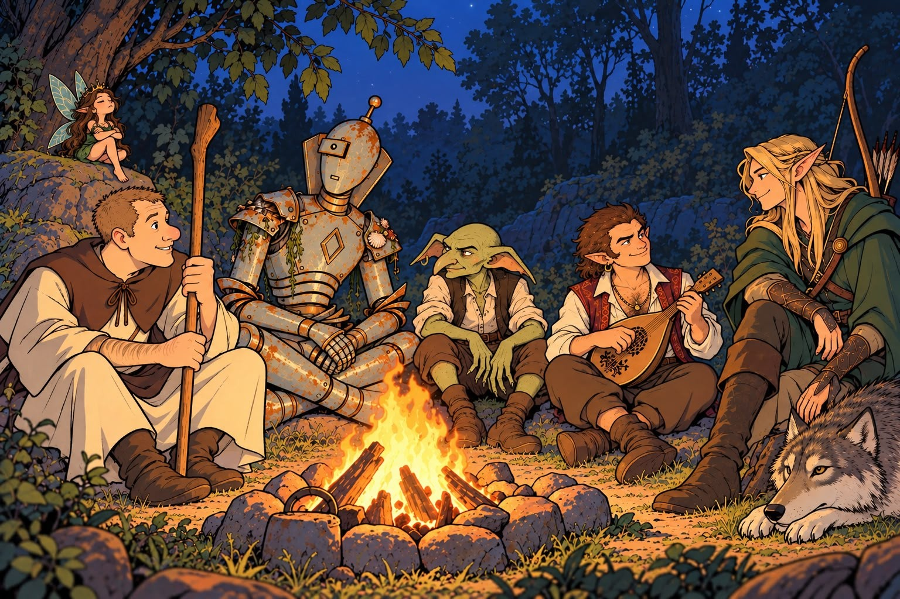

G
L’Atelier de Guiltanas • Table de la Bastide
Chroniques Oubliées Fantasy 2
Île aux
Tempêtes
Le quartier général de la table de la Bastide.

La compagnie de la Bastide
Une création de Prépôtante
Entrer dans l’espace joueurs
Personnages et outils de campagne
›
Ouvrir la table du MJ
Préparation et administration
›